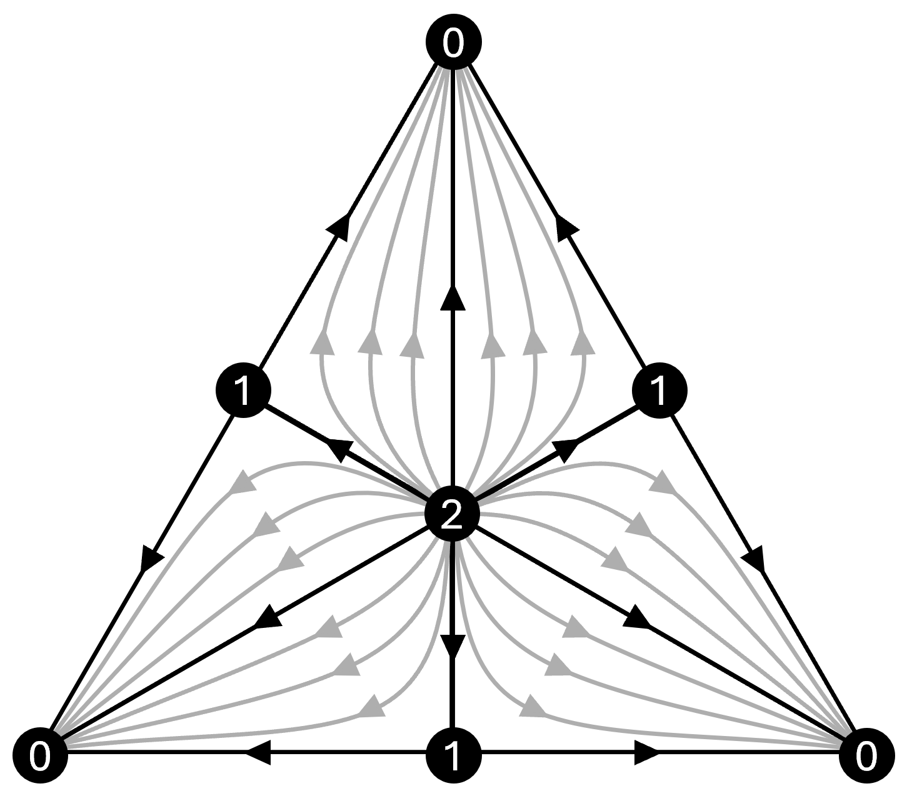

Figure 1: Mathematical schematic of topological minimum energy surface.
Existence & Uniqueness of Minimum Energy Surfaces
While zero-dimensional transition states and one-dimensional Minimum Energy Pathways (MEPs) are well-established in chemical dynamics, higher-dimensional energy surfaces lack rigorous mathematical foundations. This research establishes the first formal existence and uniqueness proof for two-dimensional minimum energy surfaces across multi-dimensional potential energy landscapes. By framing the problem through geometric analysis and variational principles, we demonstrate that two-dimensional minimal surfaces subject to specified boundary conditions are well-posed, providing a mathematically sound framework for multi-dimensional reaction coordinate reductions.
- Variational Calculus
- Geometric Analysis
- Differential Topology
- Mathematical Physics